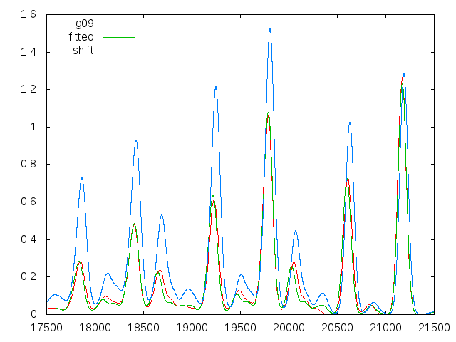
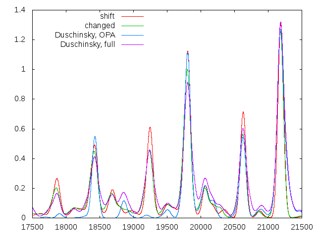
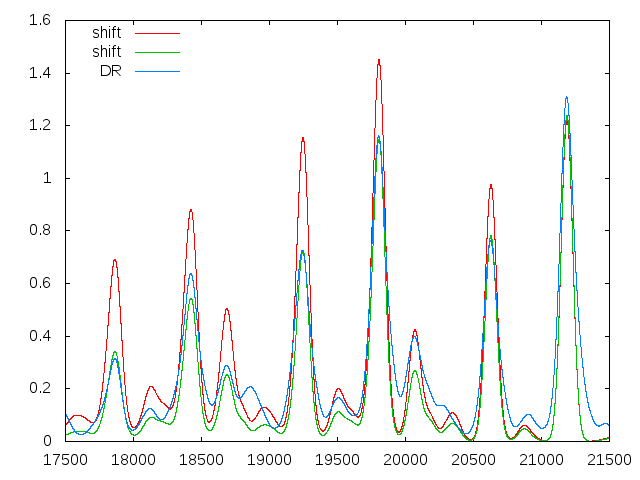
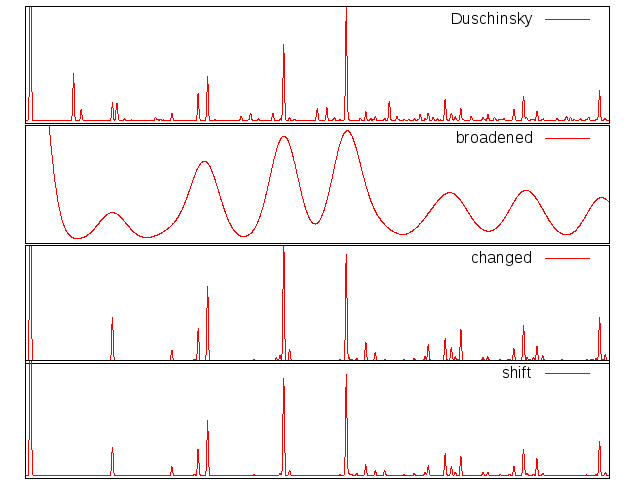
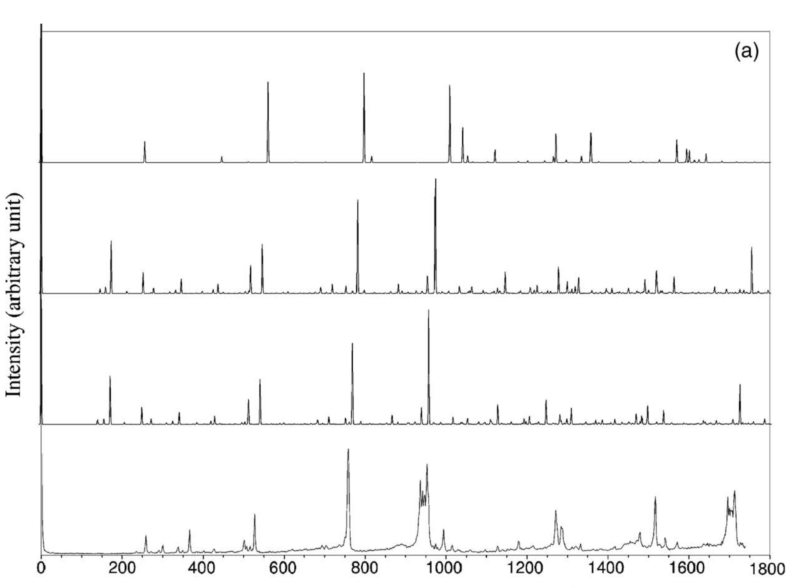
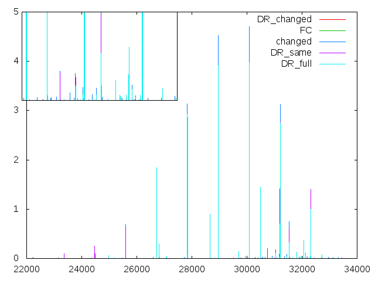

Here, the focus is on the comparison of the smsc-spectra with those from g09 (using same input-calculations).
This test-case gave rise to the factor of π/4
As the figure above shows, the vibrational bands are strongly overestimated (blue curve). Instead, the green line fits the Gaussian-spectrum quite well. Comparing the invented HR-factors (green) with the calculated ones (blue) yields:
Some explanations of GAUSSIANs calculatios is given in a presentation about this.
A new test-suite involves trying different expressions for the K-vector. Here, surprisingly, the results differ and I try to find out, what the consequences are.
Comparing the 'new' results with the shifted ones (the new ones are shifted as well), gives:
Calculations performed on 29.9.2015 with new version including corrected K-vectorComparison of stretched/ unstretched spectra with model "shift" and the NOT STRETCHED Duschinsky shows:
What exactly is the G09-model? Maybe the coincidence is just very bad.
Than the question would be, if the factor is just by accident or is the factor just before HR-factors (not before K)?
In the latter case, the 'intermediate step' of changed spectrum would need an explanation.
The graphics in the figure below are calculated with smallscript (red curves) and directly with Gaussian. The latter ones, as well as the experimental data, are taken from: Julien Bloino et. al., THE JOURNAL OF CHEMICAL PHYSICS 128, 244105, 2008
 
The shown spectrum might be unphysical but gives nice features.
Spectra look like: There will come some thoughts of plausibility
First step: Calculate with a bit more breading; than one might see the differences better. (if necessary + sticks as dots)| mathematica-script | smallscript | (unscaled) | |
| 1.1456847769131 | 1834 | 1.145492 | 1835 |
| 0.9376260743001 | 1120 | 0.937291 | 1121 |
| 0.3019733450807 | 1289 | 0.301495 | 1290 |
| 0.1735185742247 | 658 | 0.173418 | 659 |
| 0.0050489755056 | 3592 | 0.005057 | 3593 |
| 0.0030092539375 | 3568 | 0.003011 | 3569 |